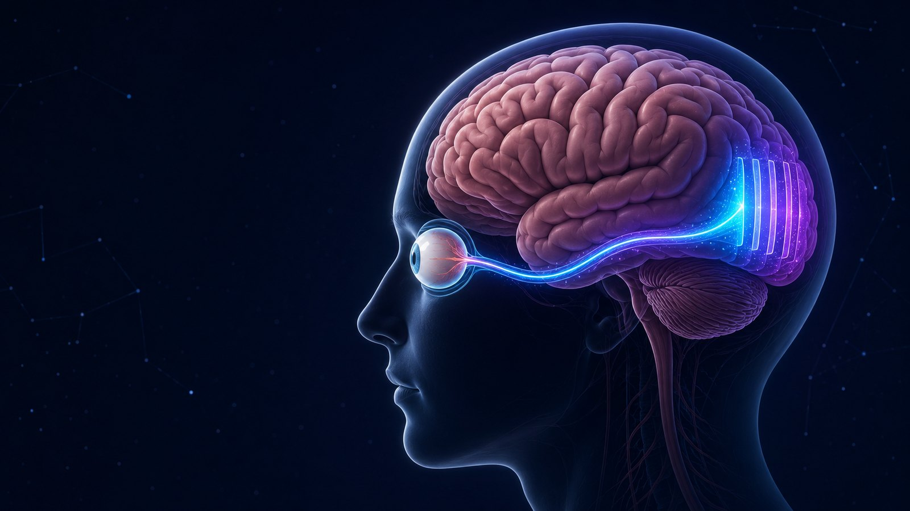

Long before your first textbook, you learned to see the world. It turns out that's exactly how we teach machines to think. Let's walk through it — with you as the example. 🧠
When you were tiny, someone pointed and said "This is a cat." The picture of that cat entered your brain through your eyes. Your eyes are sensors — the exact same job a camera does for a robot or an AI. Sound in? That's your ears — a microphone. Every AI starts here: a sensor lets the world in.
A picture comes in through your eye and flows to the back of your brain, where it's kept as features in a few layers. First you learn from many examples (training). Then you can spot a brand-new one you've never seen before (prediction).

Learning a cat happens in two phases. Tap each one:
This isn't just about cats. It's literally your school life:
Every lesson, you take in examples and tune your brain. This is the learning phase.
In the test you answer questions using what you learned. This is the answering phase.
Line them up side by side and it's the same story:
When you play with the science & maths lessons, you're not memorising — you're tuning your own layers, exactly like an AI in training. Go play, gather lots of varied examples, and you'll answer questions you've never even seen before. That's how you get smarter — and it's how we build AI at DeepManthan.
← Go play & train your brain